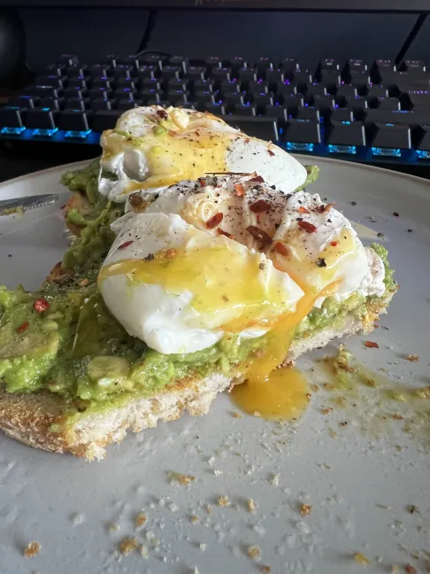

Harry's Poached Egg & Crushed Avocado On Toast

Poached egg with crushed avocado on toast
A healthy, filling and ridiciously tasty lunch favourite.
Shopping List
- Bread (Any Type): 2 Slices
- Eggs: 2
- Ripe Avocado: 1
- Olive Oil: 1tsp
- Lemon Juice: 1tsp
- Chilli Flakes: 1tsp
- Salt & Pepper: 1tsp
The Recipe
- Deseed the avocado, put the innards in to a bowl and mash it up to desired texture.
- Fill a pot with boiling water, create a water vortex by stirring the water and crack in the eggs. Put a timer on for 3 minutes.
- Toast your bread until the desired level.
- Whilst the eggs cook, add all the remaining ingredients to the avocado and mix well.
- Take the eggs out and put them on a paper towel to dry, patting them if required.
- Spread the avocado over the slices of toast, top with the poached egg.
- Enjoy!
Tips!
A lot of cooking is in the way something is cooked, below are some tips I've found out through my time cooking this dish!
- A squirt of any sort of acid in the egg water before adding the eggs help them stay together.
- You can use extra salt, pepper and chilli flakes as garnish once the meal is assembled.
- An additional 15 seconds in the water will result in a firmer, but still runny yolk.
- If you're worried the eggs may be over cooking, cut them open slightly as soon as they're placed on the toast.
Home